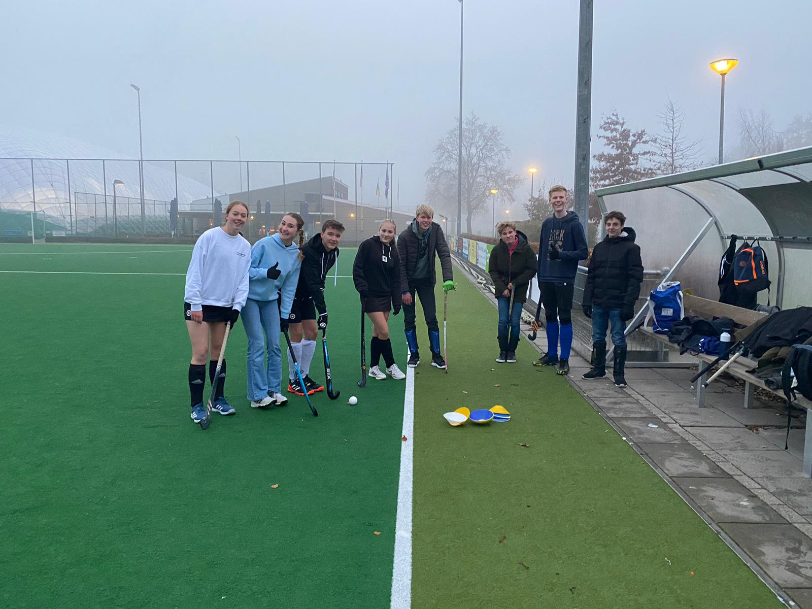
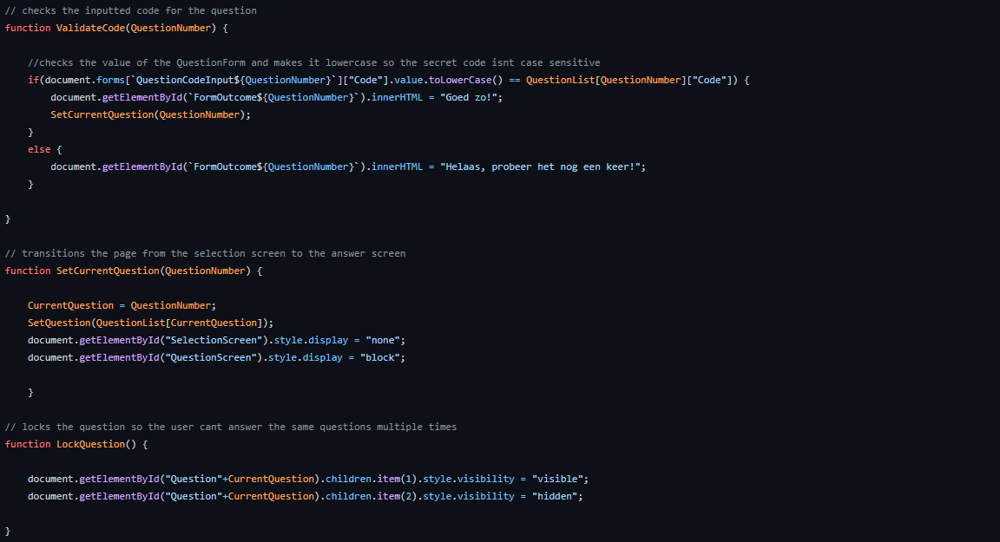

@Teun Weijdener 2022
Ik vind Hockey leuk! Zie hieronder een beroerde foto van toe we met een aantal klasgenoten gingen hockeyen:
Ook vindt ik het leuk om te coderen, ik doe dit erg vaak en begin dit nu ook steeds meer te gebruiken in het echt. Dit is iets wat ik niet had verwacht aangezien ik het eerst echt alleen maar als een hobby zag, hieronder zie je een beetje code voor een project waar ik mee bezig ben!
Ik ben fan van fietsen, ik fiets soms wel 60 kilometer op een dag. Ik zoek dan vooral naar routes die door weilanden lopen, gelukkig zijn er daar in nederland genoeg van!
Mijn favoriete kleur is Blauw.
Ik weet veel van de ruimtevaart en zeker ook de luchtvaart, het is mijn doel om een militair piloot te worden voor de nederlandse luchtmacht.
Ik drink een ongezonde hoeveelheid thee, mijn record op een dag is 2,1 liter thee. Kamille en rooibos zijn mijn favoriet!
Ik ben bijna 2 meter en ik ben nogsteeds aan het groeien, ik toren op school boven iedereen uit!
Ik heb wiskunde b gekozen terwijl iedereen zei dat ik dit niet moest doen, ik denk dat ik een fout heb gemaakt en toch maar had moeten luisteren...
Ondanks dat ik al te weinig tijd had heb ik mij aangesloten bij de debatclub en ook de filosofieclub, ik ben benieuwd naar hoe dat zal gaan!
Dat kan, stuur ze alsjeblieft naar 39506@youscope.nl, dan beantwoord ik ze zo snel mogelijk.
@Teun Weijdener 2022